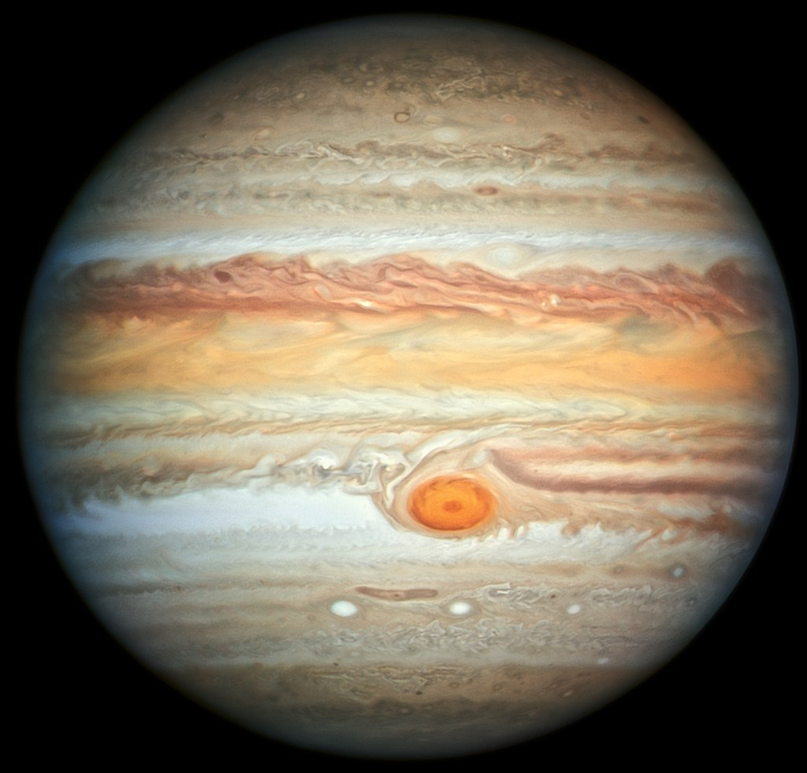

| Орбитальные характеристики |
| Перигелий |
7,405736⋅108 км (4,950429 а.е.) |
| Афелий |
8,165208⋅108 км (5,458104 а.е.) |
| Большая полуось (a) |
7,785472⋅108 км (5,204267 а.е.) |
| Эксцентриситет орбиты (e) |
0,048775 |
| Сидерический период обращения |
4332,589 дня (11,8618 года) |
| Синодический период обращения |
398,88 дня |
| Орбитальная скорость (v) |
13,07 км/с (средн.) |
| Наклонение (i) |
1,304° (относительно эклиптики)
6,09° (относительно солнечного экватора) |
| Долгота восходящего узла (Ω) |
100,55615° |
| Аргумент перицентра (ω) |
275,066° |
| Чей спутник |
Солнце |
| Спутники |
79 |
| Физические характеристики |
| Полярное сжатие |
0,06487 |
| Экваториальный радиус |
71 492 ± 4 км |
| Полярный радиус |
66 854 ± 10 км |
| Средний радиус |
69 911 ± 6 км |
| Площадь поверхности (S) |
6,21796⋅1010 км² 121,9 земных |
| Объём (V) |
1,43128⋅1015 км³ 1321,3 земных |
| Масса (m) |
1,8986⋅1027 кг 317,8 земных |
| Средняя плотность (ρ) |
1,326 г/см³ |
| Ускорение свободного падения на экваторе (g) |
24,79 м/с² (2,535 g) |
| Первая космическая скорость (v1) |
42,58 км/с |
| Вторая космическая скорость (v2) |
59,5 км/с |
| Экваториальная скорость вращения |
12,6 км/с или 45 300 км/ч |
| Период вращения (T) |
9,925 часа |
| Наклон оси |
3,13° |
| Прямое восхождение северного полюса (α) |
17 ч 52 мин 14 с 268,057° |
| Склонение северного полюса (δ) |
64,496° |
| Альбедо |
0,343 (Бонд) 0,52 (геом. альбедо) |
| Видимая звёздная величина |
от -1,61 до -2,94 |
| Абсалютная звёздная величина |
-9,4 |
| Угловой диаметр |
29,8"–50,1"" |
| Атмосфера |
| Атмосферное давление |
20–220 кПа |
| Шкала высотф |
27 км |
Состав:
- 89,8±2,0 % Водород (H2)
- 10,2±2,0 % Гелий (He)
- ~0,3 % Метан (CH4)
- ~0,026 % Аммоний (NH4+)
- ~0,003 % Дейтерид водорода (HD)
- 0,0006 % Этан (CH3—CH3)
- 0,0004 % Вода (H2O)
|
|

Фотография Юпитера, сделанная 27 июня 2019 года с телескопа «Хаббл».
|